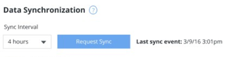
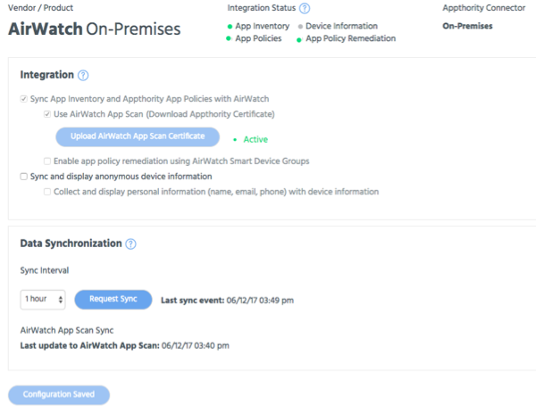

Use the Data Synchronization section to set time interval options for Appthority to sync with your EMM, and to request a sync outside of this interval. After a request, a sync will occur the next time Connector (or MobileIron legacy) checks in with Appthority, which happens every two minutes. Completing a full sync can take minutes or hours, depending on the number of devices and mobile apps in your environment.
Select the sync interval, in hours, from the dropdown.
If you make any changes on this page, click Save Changes to save your changes and request a sync. Click Request Sync to sync without making changes.
When you click Save Changes or Request Sync, the Request Sync button will change to Requesting Sync.
Requesting Sync will also display when a sync is triggered by the sync interval.
Once a sync is complete, buttons will return to their original state and Last sync event information will be updated.

AirWatch App Scan sync
If you enable AirWatch App Scan, you can initiate a sync from App Scan or Appthority. Additional details will also be displayed; if App Scan is not enabled, these options will appear grayed out.
NOTE: If you select to use App Scan, apps and policies will sync to App Scan.
